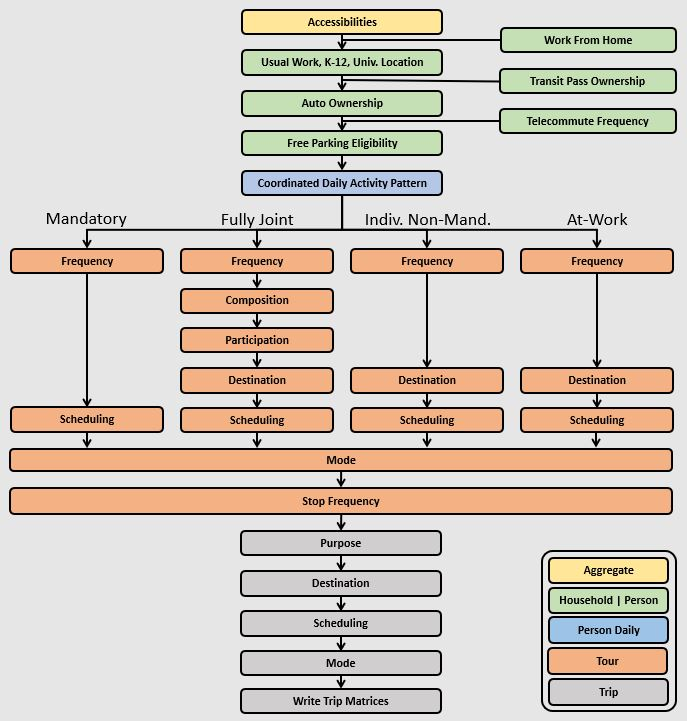

Example¶
This page describes the example model design and how to setup and run the example. The default configuration of the example is limited to a small sample of households and zones so that it can be run quickly and require less than 1 GB of RAM. The full scale example can be configurd and run as well.
Example Model Design¶
The example AB model implemented with the activitysim framework is Bay Area Metro Travel Model One (TM1). TM1 has its roots in a wide array of analytical approaches, including discrete choice forms (multinomial and nested logit models), activity duration models, time-use models, models of individual micro-simulation with constraints, entropy-maximization models, etc. These tools are combined in the model design to realistically represent travel behavior, adequately replicate observed activity-travel patterns, and ensure model sensitivity to infrastructure and policies. The model is implemented in a micro-simulation framework. Microsimulation methods capture aggregate outcomes through the representation of the behavior of individual decision-makers.
Space¶
TM1 uses the 1454-zone system developed for MTC’s previous trip-based model. The zones are fairly large, which may distort the representation of transit access in mode choice. To ameliorate this problem, the zones were further sub-divided into three categories of transit access: short walk, long walk, and not walkable.
However, support for transit subzones is not included in the activitysim implementation since the latest generation of activity-based models typically use multiple zone systems instead. In brief, all households are assigned to microzones (such as Census blocks) and trips are assigned to origin and destination microzones. When considering network level-of-service (LOS) indicators, different spatial resolutions can be used for different modes. For example:
- TAZs are used for auto network modeling and a set of taz-to-taz skims is input to the demand model
- Microzones are used for nearby non-motorized mode (walk and bike) network modeling and skims and a set of nearby maz-to-maz skims is input to the demand model
- Transit access points (TAPs) (or transit catchment areas) are used for transit network modeling and skims and a set of tap-to-tap skims is input to the demand model
- Microzone to transit access point for transit access/egress LOS is input to the demand model
Since trips are modeled in the demand model from microzone to microzone, but transit network LOS is split across two input data sets, transit virtual path building (TVPB) is done to generate LOS measures from:
- the trip’s origin microzone to a select number of nearby TAPs using microzone to TAP LOS measures
- boarding TAP to alighting TAP LOS measures (TAP to TAP skims)
- alighting TAP to destination microzone using microzone to TAP LOS measures
The resulting complete transit path LOS for the “best” or a “bundle” of paths is then used in the demand model for representing transit LOS at the microzone level. This functionality is NOT YET IMPLEMENTED, but planned for a future release.
Decision-making units¶
Decision-makers in the model system are households and persons. These decision-makers are created for each simulation year based on a population synthesis process such as PopulationSim. The decision-makers are used in the subsequent discrete-choice models to select a single alternative from a list of available alternatives according to a probability distribution. The probability distribution is generated from various logit-form models which take into account the attributes of the decision-maker and the attributes of the various alternatives. The decision-making unit is an important element of model estimation and implementation, and is explicitly identified for each model.
Person type segmentation¶
TM1 is implemented in a micro-simulation framework. A key advantage of the micro-simulation approach is that there are essentially no computational constraints on the number of explanatory variables which can be included in a model specification. However, even with this flexibility, the model system includes some segmentation of decision-makers. Segmentation is a useful tool both to structure models and also as a way to characterize person roles within a household.
The person types shown below are used for the example model. The person types are mutually exclusive with respect to age, work status, and school status.
| Person Type | Age | Work Status | School Status |
|---|---|---|---|
| Full-time worker (30+ hours a week) | 18+ | Full-time | None |
| Part-time worker (<30 hours but works on a regular basis) | 18+ | Part-time | None |
| Non-working adult | 18 - 64 | Unemployed | None |
| Retired person | 65+ | Unemployed | None |
| College student | 18+ | Any | College |
| Driving age student | 16 - 17 | Any | Pre-college |
| Non-driving student | 6 - 16 | None | Pre-college |
| Pre-school child | 0 - 5 | None | None |
Household type segments are useful for pre-defining certain data items (such as destination choice size terms) so that these data items can be pre-calculated for each segment. Precalculation of these data items reduces model complexity and runtime. The segmentation is based on household income, and includes four segments - low, medium, high, very high.
In the model, the persons in each household are assigned a simulated but fixed “value of time” that modulates the relative weight the decision-maker places on time and cost. The probability distribution from which the value of time is sampled was derived from a toll choice model estimated using data from a stated preference survey performed for the SFCTA’s Mobility, Access, and Pricing Study, and is a lognormal distribution with a mean that varies by income segment. Value of time assignment is NOT YET IMPLEMENTED.
Activity type segmentation¶
The activity types are used in most model system components, from developing daily activity patterns and to predicting tour and trip destinations and modes by purpose. The set of activity types is shown below. The activity types are also grouped according to whether the activity is mandatory or non-mandatory and eligibility requirements are assigned determining which person-types can be used for generating each activity type. The classification scheme of each activity type reflects the relative importance or natural hierarchy of the activity, where work and school activities are typically the most inflexible in terms of generation, scheduling and location, and discretionary activities are typically the most flexible on each of these dimensions. Each out-of-home location that a person travels to in the simulation is assigned one of these activity types.
| Purpose | Description | Classification | Eligibility |
|---|---|---|---|
| Work | Working at regular workplace or work-related activities outside the home | Mandatory | Workers and students |
| University | College or University | Mandatory | Age 18+ |
| High School | Grades 9-12 | Mandatory | Age 14-17 |
| Grade School | Grades K-8 | Mandatory | Age 5-13 |
| Escorting | Pick-up/drop-off passengers (auto trips only) | NonMandatory | Age 16+ |
| Shopping | Shopping away from home | NonMandatory | Age 5+ (if joint travel, all persons) |
| Other Maintenance | Personal business/services and medical appointments | NonMandatory | Age 5+ (if joint travel, all persons) |
| Social/Recreational | Recreation, visiting friends/family | NonMandatory | Age 5+ (if joint travel, all persons) |
| Eat Out | Eating outside of home | NonMandatory | Age 5+ (if joint travel, all persons) |
| Other Discretionary | Volunteer work, religious activities | NonMandatory | Age 5+ (if joint travel, all persons) |
Treatment of time¶
The model system functions at a temporal resolution of one hour. These one hour increments begin with 3 AM and end with 3 AM the next day. Temporal integrity is ensured so that no activities are scheduled with conflicting time windows, with the exception of short activities/tours that are completed within a one hour increment. For example, a person may have a short tour that begins and ends within the 8 AM to 9 AM period, as well as a second longer tour that begins within this time period, but ends later in the day.
A critical aspect of the model system is the relationship between the temporal resolution used for scheduling activities and the temporal resolution of the network assignment periods. Although each activity generated by the model system is identified with a start time and end time in one hour increments, LOS matrices are only created for five aggregate time periods. The trips occurring in each time period reference the appropriate transport network depending on their trip mode and the mid-point trip time. The definition of time periods for LOS matrices is given below.
| Time Period | Start to End Hour |
|---|---|
| EA | 3 to 6 |
| AM | 6 to 10 |
| MD | 11 to 15 |
| PM | 15 to 19 |
| EV | 19 to 3 |
Trip modes¶
The trip modes defined in the example model are below. The modes include auto by occupancy and toll/non-toll choice, walk and bike, and walk and drive access to five different transit line-haul modes.
- Auto - SOV (Free)
- Auto - SOV (Pay)
- Auto - 2 Person (Free)
- Auto - 2 Person (Pay)
- Auto - 3+ Person (Free)
- Auto - 3+ Person (Pay)
- Walk
- Bike
- Walk to Local Bus
- Walk to Light-Rail Transit
- Walk to Express Bus
- Walk to Bus Rapid Transit
- Walk to Heavy Rail
- Drive to Local Bus
- Drive to Light-Rail Transit
- Drive to Express Bus
- Drive to Bus Rapid Transit
- Drive to Heavy Rail
Sub-models¶
The general design of the example model is presented below. Long-term choices that relate to the usual workplace/university/school for each worker and student, household car ownership, and the availability of free parking at workplaces are first.
The coordinated daily activity pattern type of each household member is the first travel-related sub-model in the hierarchy. This model classifies daily patterns by three types:
- Mandatory, which includes at least one out-of-home mandatory activity (work or school)
- Non-mandatory, which includes at least one out-of-home non-mandatory activity, but does not include out-of-home mandatory activities
- Home, which does not include any out-of-home activity or travel
The pattern type sub-model leaves open the frequency of tours for mandatory and nonmandatory purposes since these sub-models are applied later in the model sequence. Daily pattern-type choices of the household members are linked in such a way that decisions made by members are reflected in the decisions made by the other members.
After the frequency and time-of-day for work and school tours are determined, the next major model component relates to joint household travel. This component produces a number of joint tours by travel purpose for the entire household, travel party composition in terms of adults and children, and then defines the participation of each household member in each joint household tour. It is followed by choice of destination and time-ofday.
The next stage relates to maintenance and discretionary tours that are modeled at the individual person level. The models include tour frequency, choice of destination and time of day. Next, a set of sub-models relate tour-level details on mode, exact number of intermediate stops on each half-tour and stop location. It is followed by the last set of sub-models that add details for each trip including trip departure time, trip mode details and parking location for auto trips.
The output of the model is a disggregate table of trips with individual attributes for custom analysis. The trips can be aggregated into travel demand matrices for network loading.
Setup¶
The following describes the example model setup.
Folder and File Setup¶
The example has the following root folder/file setup:
- configs - settings, expressions files, etc.
- data - input data such as land use, synthetic population files, and skims
- simulation.py - main script to run the model
Inputs¶
In order to run the example, you first need two input files in the data folder as identified in the configs\settings.yaml file:
store: mtc_asim.h5 - an HDF5 file containing the following MTC TM1 tables as pandas DataFrames for a subset of zones:
- skims/accessibility - Zone-based accessibility measures
- land_use/taz_data - Zone-based land use data (population and employment for example)
- persons - Synthetic population person records
- households - Synthetic population household records
skims_file: skims.omx - an OMX matrix file containing the MTC travel model one skim matrices for a subset of zones.
Both files are used in the tests as well and are in the activitysim\abm\test\data folder. Alternatively,
these files can be downloaded from the SF_25_zone_example folder on
MTC’s box account. The full set of MTC
TM1 OMX skims are also on the box account.
Note
Input files can be viewed with the OMX Viewer.
The scripts\data_mover.ipynb was used to create the mtc_asim.h5 file from the raw CSV files.
This script reads the CSV files, creates DataFrame indexes, and writes the pandas objects to the HDF5 file.
The scripts\build_omx.py script will build one OMX file containing all the skims. The original MTC TM1 skims were converted from
Cube to OMX using the Cube to OMX converter.
The example inputs were created by the scripts\create_sf_example.py script, which creates the land use, synthetic population, and skim inputs for a subset of user-defined zones.
Configuration¶
The configs folder contains settings, expressions files, and other files required for specifying
model utilities and form. The first place to start in the configs folder is settings.yaml, which
is the main settings file for the model run. This file includes:
models- list of model steps to run - auto ownership, tour frequency, etc. - see Pipelinestore- HDF5 inputs fileskims_file- skim matrices in one OMX filehouseholds_sample_size- number of households to sample and simulate; comment out to simulate all householdstrace_hh_id- trace household id; comment out for no tracetrace_od- trace origin, destination pair in accessibility calculation; comment out for no tracechunk_size- batch size for processing choosers, see Chunk sizecheck_for_variability- disable check for variability in an expression result debugging feature in order to speed-up runtimeglobal variables that can be used in expressions tables and Python code such as:
urban_threshold- urban threshold area type max valuecounty_map- mapping of county codes to county namesskim_time_periods- time period upper bound values and labels
Sub-Model Specification Files¶
Included in the configs folder are the model specification files that store the
Python/pandas/numpy expressions, alternatives, and other settings used by each model. Some models includes an
alternatives file since the alternatives are not easily described as columns in the expressions file. An example
of this is the non_mandatory_tour_frequency_alternatives.csv file, which lists each alternative as a row and each
columns indicates the number of non-mandatory tours by purpose. The current set of files are below.
| Model | Specification Files |
|---|---|
| Accessibility |
|
| School Location |
|
| Workplace Location |
|
| Auto Ownership |
|
| Free Parking Eligibility | NOT YET IMPLEMENTED |
| Coordinated Daily Activity Pattern |
|
| Mandatory Tour Frequency |
|
| Mandatory Tour Scheduling |
|
| Joint Tour Frequency |
|
| Joint Tour Composition |
|
| Joint Tour Participation |
|
| Joint Tour Destination Choice |
|
| Joint Tour Scheduling |
|
| Non-Mandatory Tour Frequency |
|
| Non-Mandatory Tour Destination Choice |
|
| Non-Mandatory Tour Scheduling |
|
| Tour Mode Choice |
|
| At-work Subtours Frequency |
|
| At-work Subtours Destination Choice |
|
| At-work Subtour Scheduling |
|
| At-work Subtour Mode |
|
| Intermediate Stop Frequency |
|
| Trip Purpose |
|
| Trip Destination Choice |
|
| Trip Scheduling |
|
| Trip Mode Choice |
|
| Trip CBD Parking | NOT YET IMPLEMENTED |
Chunk size¶
The chunk_size is the number of doubles in a chunk of the choosers table. It is approximately the number
of rows times the number of columns and it needs to be set to a value that efficiently processes the table with
the available RAM. For example, a chunk size of 1,000,000 could be 100,000 household records with 10 columns of attributes.
Setting the chunk size too high will run into memory errors such as OverflowError: Python int
too large to convert to C long. Setting the chunk size too low may result in smaller than optimal vector
lengths, which may waste runtime. The chunk size is dependent on the size of the population, the complexity
of the utility expressions, the amount of RAM on the machine, and other problem specific dimensions. Thus,
it needs to be set via experimentation.
Running the Example¶
To run the example, do the following:
- Open a command line window in the
examplefolder - Activate the correct conda environment if needed
- Run
python simulation.pyto run the data pipeline (i.e. model steps) - ActivitySim should log some information and write outputs to the
outputsfolder.
The example should complete within a couple minutes since it is running a small sample of households.
Pipeline¶
The models setting contains the specification of the data pipeline model steps, as shown below:
models:
- initialize
- compute_accessibility
- school_location_sample
- school_location_logsums
- school_location_simulate
- workplace_location_sample
- workplace_location_logsums
- workplace_location_simulate
- auto_ownership_simulate
- cdap_simulate
- mandatory_tour_frequency
- mandatory_tour_scheduling
- joint_tour_frequency
- joint_tour_composition
- joint_tour_participation
- joint_tour_destination_sample
- joint_tour_destination_logsums
- joint_tour_destination_simulate
- joint_tour_scheduling
- non_mandatory_tour_frequency
- non_mandatory_tour_destination
- non_mandatory_tour_scheduling
- tour_mode_choice_simulate
- atwork_subtour_frequency
- atwork_subtour_destination_sample
- atwork_subtour_destination_logsums
- atwork_subtour_destination_simulate
- atwork_subtour_scheduling
- atwork_subtour_mode_choice
- stop_frequency
- trip_purpose
- trip_destination
- trip_purpose_and_destination
- trip_scheduling
- trip_mode_choice
- write_data_dictionary
- write_tables
These model steps must be registered orca steps, as noted below. If you provide a resume_after
argument to activitysim.core.pipeline.run() the pipeliner will load checkpointed tables from the checkpoint store
and resume pipeline processing on the next model step after the specified checkpoint.
resume_after = None
#resume_after = 'school_location_logsums'
The model is run by calling the activitysim.core.pipeline.run() method.
pipeline.run(models=_MODELS, resume_after=resume_after)
Outputs¶
The key output of ActivitySim is the HDF5 data pipeline file outputs\pipeline.h5. This file contains a copy
of each key data table after each model step in which the table was modified. The
scripts\make_pipeline_output.py script uses the information stored in the pipeline file to create the table
below for a small sample of households. The table shows that for each table in the pipeline, the number of rows
and/or columns changes as a result of the relevant model step. A checkpoints table is also stored in the
pipeline, which contains the crosswalk between model steps and table states in order to reload tables for
restarting the pipeline at any step.
| Table | Creator | NRow | NCol |
|---|---|---|---|
| accessibility | compute_accessibility | 10 | 25 |
| atwork_subtour_destination_sample | atwork_subtour_destination_sample | 4 | 46 |
| atwork_subtour_destination_sample | atwork_subtour_destination_logsums | 5 | 46 |
| households | initialize | 64 | 100 |
| households | cdap_simulate | 68 | 100 |
| households | joint_tour_frequency | 70 | 100 |
| joint_tour_destination_sample | joint_tour_destination_sample | 4 | 30 |
| joint_tour_destination_sample | joint_tour_destination_logsums | 4 | 30 |
| joint_tour_participants | joint_tour_participation | 4 | 4 |
| land_use | initialize | 45 | 25 |
| person_windows | initialize | 21 | 157 |
| persons | initialize | 40 | 157 |
| persons | school_location_simulate | 43 | 157 |
| persons | workplace_location_simulate | 48 | 157 |
| persons | cdap_simulate | 54 | 157 |
| persons | mandatory_tour_frequency | 59 | 157 |
| persons | non_mandatory_tour_frequency | 64 | 157 |
| school_location_sample | school_location_sample | 4 | 157 |
| school_location_sample | school_location_logsums | 5 | 157 |
| tours | mandatory_tour_frequency | 11 | 71 |
| tours | mandatory_tour_scheduling | 15 | 71 |
| tours | joint_tour_composition | 16 | 73 |
| tours | atwork_subtour_frequency | 19 | 186 |
| tours | stop_frequency | 21 | 186 |
| trips | stop_frequency | 7 | 428 |
| trips | trip_purpose | 8 | 428 |
| trips | trip_destination | 11 | 428 |
| trips | trip_scheduling | 12 | 428 |
| trips | trip_mode_choic | 13 | 428 |
| workplace_location_sample | workplace_location_sample | 3 | 916 |
| workplace_location_sample | workplace_location_logsums | 4 | 916 |
The example simulation.py run model script also writes the final tables to CSV files
for illustrative purposes by using the activitysim.core.pipeline.get_table() method. This method
returns a pandas DataFrame, which can then be written to a CSV with the to_csv(file_path) method.
ActivitySim also writes log and trace files to the outputs folder. The asim.log file, which
is the overall log file is always produced. If tracing is specified, then trace files are output
as well.
Tracing¶
There are two types of tracing in ActivtiySim: household and origin-destination (OD) pair. If a household trace ID is specified, then ActivitySim will output a comprehensive set (i.e. hundreds) of trace files for all calculations for all household members:
hhtrace.log- household trace log file, which specifies the CSV files traced. The order of output files is consistent with the model sequence.various CSV files- every input, intermediate, and output data table - chooser, expressions/utilities, probabilities, choices, etc. - for the trace household for every sub-model
If an OD pair trace is specified, then ActivitySim will output the acessibility calculations trace file:
accessibility.result.csv- accessibility expression results for the OD pair
With the set of output CSV files, the user can trace ActivitySim’s calculations in order to ensure they are correct and/or to help debug data and/or logic errors.